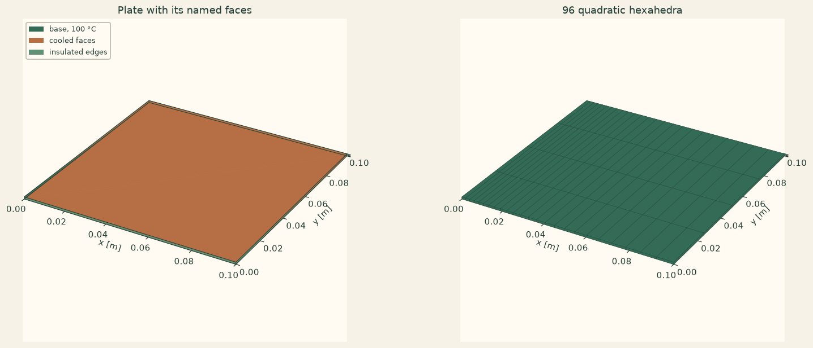

Docs › Examples › Out-of-plane heat transfer in a thin plate
Heat transfer · 3D
Out-of-plane heat transfer in a thin plate
An aluminium plate 100 times thinner than it is long, held hot at one edge and cooled by a liquid on both large faces.
Run locally with OneSimulation. The example downloads are free. Running them requires an activated runtime. OneSimulation 1.0 · CPython 3.13 on macOS (Apple Silicon), Ubuntu 22.04 (x86-64), and Windows x64. Installation and activation · View pilot plans. Scope of the reference checks.

What it computes
OneSimulation reads the plate from a STEP file, meshes it with structured hexahedra through the full thickness and solves steady 3D conduction with convective cooling on both faces, so the out-of-plane heat loss is resolved instead of modelled. The script that builds the STEP file comes with the notebook.
What it checks
The mid-plane temperature follows the classical fin solution within 0.004 K, the faces differ from the mid-plane by at most 0.011 K (Biot number 5e-4), the tip reaches 26.762 °C against 26.761 °C, and the heat given off, 50.413 W, matches the fin solution to -0.004 % and the heat entering at the base exactly.
Geometry
The notebook starts at the import of the CAD file thin_plate_fin_cooling.step: STEP (AP242), readable by any CAD program, with the names of the faces that the boundary conditions use. Put it next to the notebook.


The geometry script
The script thin_plate_fin_cooling_geometry.py builds the geometry with the CAD objects of OneSimulation and writes the file. Change a dimension there, run it, and run the notebook again.
"""Geometry of the OneSimulation example "Thin plate cooled on both faces".
Builds the aluminium plate, 100 mm x 100 mm and 1 mm thick, with the CAD objects of OneSimulation and
writes thin_plate_fin_cooling.step. The held edge is named base, the two large faces form the group
faces (cooled by the liquid) and the three other edges form the group edges (insulated).
"""
from onesim.cad.d3 import Box
plate = Box(length=0.1, width=0.1, height=0.001)
f = plate.boundaries
plate = plate.grouped(
base=f.x_min, faces=f.z_min | f.z_max, edges=f.x_max | f.y_min | f.y_max
)
plate.save("thin_plate_fin_cooling.step")The notebook
The complete notebook, cell by cell. Run it to produce the figures and the comparison printout.
An aluminium plate, 100 mm × 100 mm and only 1 mm thick, is held at 100 °C along one edge and immersed in a liquid at 20 °C that cools both large faces with a film coefficient \(h=100\) W/(m² K). The other three edges are insulated. Heat flows along the plate and leaves it through its faces, out of the plane.
The plate is so thin that its temperature hardly changes through the thickness: the Biot number \(hd/k=5\times10^{-4}\) is tiny. Averaged over the thickness, the heat equation becomes the fin equation with the out-of-plane loss as a sink,
which is how thin plates are often reduced to two (here even one) dimensions. This notebook solves the full three-dimensional plate instead and checks the reduction.
| face | condition |
|---|---|
base, \(x=0\) | \(T=100\) °C |
faces, both large faces | \(-k\,\partial_nT=h\,(T-T_\infty)\), \(h=100\) W/(m² K), \(T_\infty=20\) °C |
edges: the far edge and the two sides | insulated |
The plate comes from the CAD file thin_plate_fin_cooling.step; the script thin_plate_fin_cooling_geometry.py builds it with the CAD objects of OneSimulation.
Reference. The fin with an insulated tip (F. P. Incropera, D. P. DeWitt, Fundamentals of Heat and Mass Transfer, ch. 3.6):
import numpy as np
from onesim.cad.exchange import load
from onesim.materials import IsotropicSolid
from onesim.meshing import Geometric, Piecewise, StructuredHexahedralMesher
from onesim.numerics import Numerics
from onesim.numerics.fem import FiniteElement, Lagrange
from onesim.numerics.linear import SparseDirect
from onesim.physics.heat_transfer import (
ConvectiveHeatFlux,
FixedTemperature,
HeatConduction,
HeatFlux,
)
from onesim.simulation import Problem, Simulation
from onesim.visualization import plots, theme
theme.set()Geometry and mesh
load returns the plate with its named faces. Quadratic hexahedra, one through the thickness and graded along the plate towards the held edge, where the temperature falls fastest.
plate = load("thin_plate_fin_cooling.step")
faces = plate.boundaries
length, width, thickness = plate.size
grading = (
Piecewise(((length, Geometric(24, ratio=4.0)),)),
Piecewise(((width, Geometric(4, ratio=1.0)),)),
Piecewise(((thickness, Geometric(1, ratio=1.0)),)),
)
mesh = StructuredHexahedralMesher(
cells=tuple(g.cells for g in grading), grading=grading
).generate(plate)
view = plots.Camera(elevation=30, azimuth=-60)
fig = plots.figure(1, 2, size=(14, 5.5))
plots.geometry(
plate,
selection={
"base, 100 °C": faces.base,
"cooled faces": faces.faces,
"insulated edges": faces.edges,
},
labels=False,
camera=view,
title="Plate with its named faces",
ax=fig[0],
)
plots.mesh(
mesh,
groups=("all",),
legend=False,
camera=view,
title=f"{mesh.cell_count} quadratic hexahedra",
ax=fig[1],
)
plots.show()Model and solution
base, liquid, film = 373.15, 293.15, 100.0
aluminium = IsotropicSolid(
density=2700.0,
specific_heat_capacity=900.0,
thermal_conductivity=200.0,
youngs_modulus=7e10,
poisson_ratio=0.33,
thermal_expansion_coefficient=2.3e-5,
)
model = HeatConduction(domain=plate.volume, material=aluminium, heating=0.0)
problem = Problem(
name="Thin plate cooled on both faces",
geometry=plate,
physics=(model,),
boundary_conditions=(
FixedTemperature(boundary=faces.base, physics=model, value=base),
ConvectiveHeatFlux(
boundary=faces.faces,
physics=model,
heat_transfer_coefficient=film,
ambient_temperature=liquid,
),
HeatFlux(boundary=faces.edges, physics=model, value=0.0),
),
)
temperature = (
Simulation(
problem=problem,
mesh=mesh,
numerics=Numerics(
spatial=FiniteElement(element=Lagrange(order=2)),
linear_solver=SparseDirect(),
),
)
.solve_stationary()
.field(model.temperature)
)Results
The temperature on the mid-plane along the centre line, the difference between the two faces, and the heat given off, against the fin solution.
k = aluminium.thermal_conductivity
m = np.sqrt(2 * film / (k * thickness))
fin = lambda x: liquid + (base - liquid) * np.cosh(m * (length - x)) / np.cosh(
m * length
)
x = np.linspace(0, length, 201)
along = lambda z: np.column_stack((x, np.full_like(x, width / 2), np.full_like(x, z)))
middle, top = (
temperature.evaluate(along(thickness / 2)).ravel(),
temperature.evaluate(along(thickness)).ravel(),
)
heat = temperature.boundary_flux(faces.faces)
exact_heat = (
np.sqrt(2 * film * k * thickness) * width * (base - liquid) * np.tanh(m * length)
)
print(
f"fin parameter m L = {m * length:.3f}, Biot number h d / k = {film * thickness / k:.1e}"
)
print(
f"largest deviation of the mid-plane temperature from the fin solution: {np.abs(middle - fin(x)).max():.4f} K"
)
print(
f"largest difference between mid-plane and face: {np.abs(middle - top).max():.4f} K"
)
print(
f"tip temperature: simulation {middle[-1] - 273.15:.3f} °C, fin solution {fin(length) - 273.15:.3f} °C"
)
print(
f"heat given off: simulation {heat:.3f} W, fin solution {exact_heat:.3f} W ({100 * (heat / exact_heat - 1):+.3f} %), "
f"heat entering at the base {-temperature.boundary_flux(faces.base):.3f} W"
)Figure
The surface temperature of the plate, and the temperature along the plate against the fin solution.
fig = plots.figure(1, 2, size=(15, 6))
plots.surface(
temperature,
component=lambda T, position: T - 273.15,
limits=(20, 100),
contours=9,
subdivisions=2,
camera=view,
label="T [°C]",
title="Surface temperature",
ax=fig[0],
)
plots.line(
points={"simulation, mid-plane": (1e3 * x[::5], middle[::5] - 273.15)},
reference={"fin solution": (1e3 * x, fin(x) - 273.15)},
hlines={"liquid, 20 °C": 20.0},
xlabel="distance from the held edge x [mm]",
ylabel="T [°C]",
title="Temperature along the plate",
legend="upper right",
ax=fig[1],
)
plots.show()Going further
Make the plate thicker in thin_plate_fin_cooling_geometry.py and write the STEP file again, or raise the film coefficient to boiling values: once \(hd/k\) approaches 0.1 the temperature varies through the thickness and the fin reduction loses accuracy, while the 3D model stays valid.